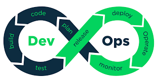
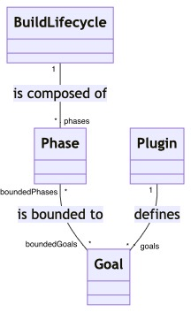
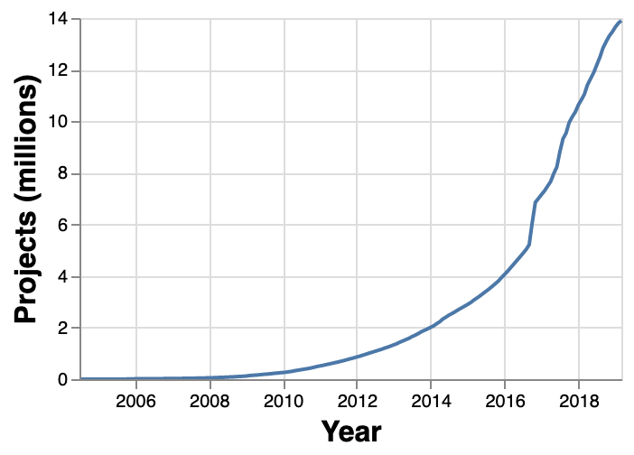

Maven
AGL
2021-2022
Introduction
Origines, motivation
Des problèmes/tâches récurrent(e)s lors de la construction d’un projet :
- Organiser son projet:
- structuration en répertoires, nommage, emplacement des fichiers,
- Compiler
- exécuter les tests
- construire les artefacts : war, jar ou ear …
- déployer
- construire des rapports qualimétriques
Origines
- Maven est un mot d’origine yiddish signifiant “accumulateur de savoirs”
- Maven est issu de la fondation Apache
- Pour unifier les pratiques de construction (build) du projet Jakarta Turbine (framework de création rapide d’applications web)
- Maven 1 : 2003
- Actuellement Maven 3
Objectifs
- Accelérer la prise en main d’un projet et des tâches de développement :
- faciliter le processus de build
- fournir un système de build uniform
- build via le POM (Project Object Model) + un ensemble de plugins
- fournir des informations sur le projet, par exemple :
- les dépendances utilisées par le projet
- change log (branchement avec le gestionnaire de code)
- rapports de tests unitaires (incluant la couverture de code)
- encourager de meilleures pratiques de développemement
- l’exécution et le reporting de test unitaire fait partie du cycle de build standard en Maven
- organisation de la structure de répertoires du projet 
Pourquoi utiliser Maven ? Gestion des dépendances
- Permettre à un développeur de construire un projet (par exemple pour une nouvelles tâche de développement) va au delà de lui donner le code
- n’oublie pas d’utiliser Java 11 au minimum
- ah oui et il faut avoir mockito installé pour les tests
- ça ne marche pas ? tu as bien la version 5 de Junit ?
- tu es sûr que tu as bien la version 2.27 de jersey pour les services REST ?
- Maven gère les dépendances du projet :
- les dépendances sont déclarées dans le projet
- si elles ne sont pas présentes dans le projet, Maven les télécharge (et aussi les dépendances transitives)
- Maven a un large dépôt (repository) auquel se référer
Pourquoi utiliser Maven ? Cycle de vie
- Permettre la construction des différents artéfacts du projet :
- le logiciel issu du build (jar, war, ear, etc)
- le site du projet
- des rapports de test (yc de couverture)
- …
- Pouvoir facilement inclure dans les phases de construction des phases de test, d’analyse de code en utilisant les plugins dédiés
- Aller facilement vers de l’intégration continue
Pom pom pom …
- La configuration du projet est centralisée dans un fichier appelé Project Object Model, autrement le pom
- C’est un fichier … en XML (ne pas oublier que Maven est né en 2003)
- On y déclare les dépendances, les plugins utilisés, etc
- On peut avoir une hiérarchie de pom …
Intégration de Maven dans les IDE
- Intégration de Maven dans tous les IDE majeurs java
- nativement
- ou via des extensions
- Fonctionnalités
- facilitation de l’édition de pom
- effective pom,
- ajout de dépendance par clic, génération de la portion de pom correspondante
- détection des erreurs syntaxiques
- lancement des commandes Maven par clic (moins intéressant)
- facilitation de l’édition de pom
Maven et les autres
- make
- outil historique (~1996)
- bcp - de fonctionnalités que les autres …
- ant (~2000, initialement projet Apache)
- pour Java mais pas que
- config xml
- phase du cycle de build = target
- flexible, n’impose aucune convention ni structure de code
- bcp de choses à faire “à la main”, pas de gestion des dépendances
- gradle (~2007)
- construit sur les concepts de maven et ant
- DSL basé groovy ou kotlin
- moins utilisé que Maven (logique) mais de + en + (ex Spring)
- plus rapide que Maven
- plus souple que Maven
- mais apprentissage plus long
Cycle de vie du build, phases, plugins, goals
Cycle de vie du build (build lifecycle)
-
Le build Maven suit un cycle de vie pour déployer et distribuer un projet.
-
Il y a 3 cycles de vie prédéfinis :
- default : cycle de vie principal = deployement du projet
- clean : nettoie le projet (supprimer les fichiers générés lors du précédent build)
- site : pour créer le site contenant la documentation du projet
-
Chaque cycle de vie est une séquence de phases
Phases
-
Une phase est une étape du cyle de vie.
-
Les phases d’un cycle sont exécutées en séquence.
- pour exécuter la phase n, il y a nécessairement au préalable exéution des n-1 phases précédentes (celles associées à au moins un goal)
-
Le cycle de vie default contient 23 phases, dont les principales sont :
- validate: vérification que toutes les infos nécessaires au build sont présentes
- compile: compilation du code source
- test-compile : compilation du code source de test
- test : exécution des tests unitaires
- package : packaging du code compilé en un format distribuable (jar, war, …)
- verify : lancement de vérifications sur les résultats des test d’intégration pour s’assurer que les critères de qualité sont satisfaits
- install : installation du package dans le dépôt local (pour utilisation locale par d’autres projets)
- deploy : copie le package vers un dépôt distant
Plugins et goals
- Chaque plugin définit des goals
- Les goals peuvent être associés aux phases du cycle de vie
- Exemple. Le plugin compiler a comme goals :
- compile
- test-compile
- help
- notation d’un goal
- plugin:goal
- ex : compiler:compile
Vue d’ensemble

- une phase qui n’est associée à aucun goal n’est pas exécutée
- une phase avec plusieurs goals les exécute en séquence
Associations entre phases et goals
spécifier le packaging
- Spécifier le packaging visé (par défaut : jar)
- Chaque packaging vient associer certaines phases à certains goals.
- par exemple le packaging jar définit les associations suivantes :
| Phase | plugin:goal |
|---|---|
| process-resources | resources:resources |
| compile | compiler:compile |
| process-test-resources | resources:testResources |
| test-compile | compiler:testCompile |
| test | surefire:test |
| package | jar:jar |
| install | install:install |
| deploy | deploy:deploy |
Associations entre phases et goals
utiliser des plugins additionnels
- Un plugin Maven fournit des goals supplémentaires
- Les goals d’un plugin sont associés aux phases du cycle de vie
- manuellement via le POM
- éventuellement le plugin définit des associations par défaut
Associations entre phases et goals
configurer des plugins
- Les plugins sont configurables
- La configuration se fait dans le POM
- Souvent le plugin définit une configuration par défaut
- Exemples :
- configuration des versions des dépendances à utiliser
- configuration du port à utiliser pour un serveur à lancer pour les tests
Premier projet Maven
Création d’un projet via le plugin archetype
- archetype est un plugin permettant la création de projets maven types.
mvn archetype:generate # invocation de maven, goal generate de archetype-DgroupId=fr.umfds.agl # id/nom du groupe -DartifactId=mon-projet # id/nom court du projet-DarchetypeArtifactId=maven-archetype-quickstart # modèle quickstart (le plus simple)-DinteractiveMode=false # le mode interactif pose des questions plutôt que de devoir tout mettre en paramètres comme ici- autres options possibles, ce qui n’est pas spécifié est mis avec des valeurs par défaut
Hiérarchie de fichiers obtenue
└── mon-projet ├── pom.xml └── src ├── main │ └── java │ └── fr │ └── umfds │ └── agl │ └── App.java └── test └── java └── fr └── umfds └── agl └── AppTest.java - Deux hiérarchies parallèles : l’une pour le code du projet, l’autre pour le test
Premier POM
<project xmlns="http://maven.apache.org/POM/4.0.0" xmlns:xsi="http://www.w3.org/2001/XMLSchema-instance" xsi:schemaLocation="http://maven.apache.org/POM/4.0.0 http://maven.apache.org/maven-v4_0_0.xsd"> <modelVersion>4.0.0</modelVersion> <groupId>fr.umfds.agl</groupId> <artifactId>mon-projet</artifactId> <packaging>jar</packaging> <version>1.0-SNAPSHOT</version> <name>mon-projet</name> <url>http://maven.apache.org</url> <dependencies> <dependency> <groupId>junit</groupId> <artifactId>junit</artifactId> <version>3.8.1</version> <scope>test</scope> </dependency> </dependencies></project>POM : carte d’identité minimale du projet
-
élément <project> : racine du pom
- modelVersion : 4.0.0 (version du POM pour maven 2 et 3)
- groupId : id (sans espace) du groupe du projet
- artifactId : id (sans espace) du projet
- version : version du projet dans le groupe
-
le nom “fully qualified” d’un projet est :
<groupId>:<artifactId>:<version>
POM : première rencontre avec les dependencies
<dependencies> <dependency> <groupId>junit</groupId> <artifactId>junit</artifactId> <version>3.8.1</version> <scope>test</scope> </dependency> </dependencies>- Déclaration des dépendances avec des éléments externes
- ici : JUnit 3.8.1
- 😱 mais c’est quoi cette version de JUnit ?
- Pour déclarer une dépendance, on utilise la carte d’identité minimale de la dépendance : groupId, artifactId, version
- Nous verrons plus loin qu’on évite de mettre ici “en dur” la version
POM : première rencontre avec la gestion des dépendances
- Mais pourquoi déclarer une dépendance ?
- Maven a un plugin dédié à la gestion des dépendances
- Ce plugin rend vraiment service !
- Lors du build (phase …), Maven va regarder si la dépendance spécifiée existe dans le projet
- si oui parfait
- sinon il la télécharge
- Maven gère aussi les dépendances transitives
- Plus de détails plus tard.
Premier build, mvn package
mvn packagemvn clean package- mvn package lance le build lifecycle default
- mvn clean package commence par faire un clean avant de lancer le build
Premier build, sortie
[INFO] Scanning for projects...[INFO] [INFO] ----------------------< fr.umfds.agl:mon-projet >-----------------------[INFO] Building mon-projet 1.0-SNAPSHOT[INFO] --------------------------------[ jar ]---------------------------------[INFO] [INFO] --- maven-resources-plugin:2.6:resources (default-resources) @ mon-projet ---[WARNING] Using platform encoding (UTF-8 actually) to copy filtered resources, i.e. build is platform dependent![INFO] skip non existing resourceDirectory /home/nebut/ENSEIGNEMENT/2021-2022/AGL/CoursMaven/mvnCL/mon-projet/src/main/resources[INFO] [INFO] --- maven-compiler-plugin:3.1:compile (default-compile) @ mon-projet ---[INFO] Changes detected - recompiling the module![WARNING] File encoding has not been set, using platform encoding UTF-8, i.e. build is platform dependent![INFO] Compiling 1 source file to /home/nebut/ENSEIGNEMENT/2021-2022/AGL/CoursMaven/mvnCL/mon-projet/target/classes[INFO] [INFO] --- maven-resources-plugin:2.6:testResources (default-testResources) @ mon-projet ---[WARNING] Using platform encoding (UTF-8 actually) to copy filtered resources, i.e. build is platform dependent![INFO] skip non existing resourceDirectory /home/nebut/ENSEIGNEMENT/2021-2022/AGL/CoursMaven/mvnCL/mon-projet/src/test/resources[INFO] [INFO] --- maven-compiler-plugin:3.1:testCompile (default-testCompile) @ mon-projet ---[INFO] Changes detected - recompiling the module![WARNING] File encoding has not been set, using platform encoding UTF-8, i.e. build is platform dependent![INFO] Compiling 1 source file to /home/nebut/ENSEIGNEMENT/2021-2022/AGL/CoursMaven/mvnCL/mon-projet/target/test-classes[INFO] [INFO] --- maven-surefire-plugin:2.12.4:test (default-test) @ mon-projet ---[INFO] Surefire report directory: /home/nebut/ENSEIGNEMENT/2021-2022/AGL/CoursMaven/mvnCL/mon-projet/target/surefire-reports ------------------------------------------------------- T E S T S-------------------------------------------------------Running fr.umfds.agl.AppTestTests run: 1, Failures: 0, Errors: 0, Skipped: 0, Time elapsed: 0.008 sec Results : Tests run: 1, Failures: 0, Errors: 0, Skipped: 0 [INFO] [INFO] --- maven-jar-plugin:2.4:jar (default-jar) @ mon-projet ---[INFO] Building jar: /home/nebut/ENSEIGNEMENT/2021-2022/AGL/CoursMaven/mvnCL/mon-projet/target/mon-projet-1.0-SNAPSHOT.jar[INFO] ------------------------------------------------------------------------[INFO] BUILD SUCCESS[INFO] ------------------------------------------------------------------------[INFO] Total time: 2.372 s[INFO] Finished at: 2021-09-06T14:22:31+02:00[INFO] ------------------------------------------------------------------------ Que s’est-il passé ?
-
Comme rien de spécifié, on construit un jar, donc on a les associations phase-goal vues précédemment
-
Exécution de toutes les phases précédant package
- process-resources (resources:resources) : copie les resources du code source vers le répertoire de sortie (target) → ici pas de ressources (skip)
- compile (compiler:compile) : compilation du source, dans le répertoire cible (target)
- test-compile (compiler:testCompile) : compilation des tests
- test (surefire:test) : exécution des tests → Tests run: 1, Failures: 0, Errors: 0, Skipped: 0
- package (jar:jar) : création de mon-projet-1.0-SNAPSHOT.jar
Que s’est-il passé ?
├── pom.xml├── src│ ├── main│ │ └── java│ │ └── fr│ │ └── umfds│ │ └── agl│ │ └── App.java│ └── test│ └── java│ └── fr│ └── umfds│ └── agl│ └── AppTest.java└── target ├── classes │ └── fr │ └── umfds │ └── agl │ └── App.class ├── maven-archiver │ └── pom.properties ├── maven-status │ └── maven-compiler-plugin │ ├── compile │ │ └── default-compile │ │ ├── createdFiles.lst │ │ └── inputFiles.lst │ └── testCompile │ └── default-testCompile │ ├── createdFiles.lst │ └── inputFiles.lst ├── mon-projet-1.0-SNAPSHOT.jar ├── surefire-reports │ ├── fr.umfds.agl.AppTest.txt │ └── TEST-fr.umfds.agl.AppTest.xml └── test-classes └── fr └── umfds └── agl └── AppTest.classPourquoi des warnings ?
[WARNING] File encoding has not been set, using platform encoding UTF-8, i.e. build is platform dependent![WARNING] Using platform encoding (UTF-8 actually) to copy filtered resources, i.e. build is platform dependent!- Quand on ne spécifie pas d’encodage, celui qui est utilisé est celui de la plateforme actuelle (ici UTF-8)
- Donc le build est dépendant de la plateforme
- pourquoi c’est mal ?
- Reproductibilité !
- Corrigeons …
Réglage de la propriété d’encodage
<project xmlns="http://maven.apache.org/POM/4.0.0" xmlns:xsi="http://www.w3.org/2001/XMLSchema-instance" xsi:schemaLocation="http://maven.apache.org/POM/4.0.0 http://maven.apache.org/maven-v4_0_0.xsd"> <modelVersion>4.0.0</modelVersion> <groupId>fr.umfds.agl</groupId> <artifactId>mon-projet</artifactId> <packaging>jar</packaging> <version>1.0-SNAPSHOT</version> <name>mon-projet</name> <url>http://maven.apache.org</url> <properties> <project.build.sourceEncoding>UTF-8</project.build.sourceEncoding> </properties> <dependencies> <dependency> <groupId>junit</groupId> <artifactId>junit</artifactId> <version>3.8.1</version> <scope>test</scope> </dependency> </dependencies></project>install
mvn installInstallation (par défaut dans le répertoire local) : * répertoire .m2 du homedir. * essentiellement : jar+POM
Maven et la gestion des dépendances
Gestion des dépendances
- Caractéristique majeure de Maven
- Un projet déclare ses dépendances, et Maven les “gère” :
- Téléchargement des dépendances manquantes
- Téléchargement des dépendances transitives (les dépendances des dépendances …)
- Analyse des dépendances : lesquelles manquent lesquelles sont (peut-être) en trop
- etc …
Déclaration simple d’une dépendance
<project> ... <dependencies> <dependency> <groupId>org.mockito</groupId> <artifactId>mockito-all</artifactId> <version>1.10.19</version> </dependency> </dependencies> ...</project>Déclaration simple d’une dépendance (en mieux avec une propriété)
<project> ... <properties> <mockito.version>1.10.19</mockito.version> </properties> ... <dependencies> <dependency> <groupId>org.mockito</groupId> <artifactId>mockito-all</artifactId> <version>${mockito.version}</version> </dependency> </dependencies> ...</project>Téléchargement de dépendance
nebut@bigarade:~/.../mon-projet$ mvn package[INFO] Scanning for projects...[INFO] [INFO] ----------------------< fr.umfds.agl:mon-projet >-----------------------[INFO] Building mon-projet 1.0-SNAPSHOT[INFO] --------------------------------[ jar ]---------------------------------Downloading from central: https://repo.maven.apache.org/maven2/org/mockito/mockito-all/1.10.19/mockito-all-1.10.19.pomDownloaded from central: https://repo.maven.apache.org/maven2/org/mockito/mockito-all/1.10.19/mockito-all-1.10.19.pom (930 B at 1.4 kB/s)Downloading from central: https://repo.maven.apache.org/maven2/org/mockito/mockito-all/1.10.19/mockito-all-1.10.19.jarDownloaded from central: https://repo.maven.apache.org/maven2/org/mockito/mockito-all/1.10.19/mockito-all-1.10.19.jar (1.2 MB at 2.2 MB/s) - installation dans le répertoire local (si pas déjà existant)
Dépendances transitives
<dependencies> <dependency> <groupId>org.mockito</groupId> <artifactId>mockito-core</artifactId> <version>3.4.6</version> </dependency></dependencies>Downloading from central: https://repo.maven.apache.org/maven2/org/mockito/mockito-core/3.4.6/mockito-core-3.4.6.pomDownloaded from central: https://repo.maven.apache.org/maven2/org/mockito/mockito-core/3.4.6/mockito-core-3.4.6.pom (25 kB at 48 kB/s)Downloading from central: https://repo.maven.apache.org/maven2/net/bytebuddy/byte-buddy/1.10.13/byte-buddy-1.10.13.pomDownloaded from central: https://repo.maven.apache.org/maven2/net/bytebuddy/byte-buddy/1.10.13/byte-buddy-1.10.13.pom (11 kB at 185 kB/s)Downloading from central: https://repo.maven.apache.org/maven2/net/bytebuddy/byte-buddy-parent/1.10.13/byte-buddy-parent-1.10.13.pomDownloaded from central: https://repo.maven.apache.org/maven2/net/bytebuddy/byte-buddy-parent/1.10.13/byte-buddy-parent-1.10.13.pom (41 kB at 583 kB/s)Downloading from central: https://repo.maven.apache.org/maven2/net/bytebuddy/byte-buddy-agent/1.10.13/byte-buddy-agent-1.10.13.pomDownloaded from central: https://repo.maven.apache.org/maven2/net/bytebuddy/byte-buddy-agent/1.10.13/byte-buddy-agent-1.10.13.pom (9.6 kB at 162 kB/s)Downloading from central: https://repo.maven.apache.org/maven2/org/objenesis/objenesis/2.6/objenesis-2.6.pomDownloaded from central: https://repo.maven.apache.org/maven2/org/objenesis/objenesis/2.6/objenesis-2.6.pom (2.8 kB at 54 kB/s)Downloading from central: https://repo.maven.apache.org/maven2/org/objenesis/objenesis-parent/2.6/objenesis-parent-2.6.pomDownloaded from central: https://repo.maven.apache.org/maven2/org/objenesis/objenesis-parent/2.6/objenesis-parent-2.6.pom (17 kB at 295 kB/s)Downloading from central: https://repo.maven.apache.org/maven2/org/mockito/mockito-core/3.4.6/mockito-core-3.4.6.jarDownloading from central: https://repo.maven.apache.org/maven2/net/bytebuddy/byte-buddy-agent/1.10.13/byte-buddy-agent-1.10.13.jarDownloading from central: https://repo.maven.apache.org/maven2/net/bytebuddy/byte-buddy/1.10.13/byte-buddy-1.10.13.jarDownloading from central: https://repo.maven.apache.org/maven2/org/objenesis/objenesis/2.6/objenesis-2.6.jarDownloaded from central: https://repo.maven.apache.org/maven2/org/objenesis/objenesis/2.6/objenesis-2.6.jar (56 kB at 169 kB/s)Downloaded from central: https://repo.maven.apache.org/maven2/org/mockito/mockito-core/3.4.6/mockito-core-3.4.6.jar (636 kB at 1.3 MB/s)Downloaded from central: https://repo.maven.apache.org/maven2/net/bytebuddy/byte-buddy-agent/1.10.13/byte-buddy-agent-1.10.13.jar (259 kB at 456 kB/s)Downloaded from central: https://repo.maven.apache.org/maven2/net/bytebuddy/byte-buddy/1.10.13/byte-buddy-1.10.13.jar (3.5 MB at 1.6 MB/s) Dependency tree
mvn dependency:tree[INFO] Scanning for projects...[INFO] [INFO] ----------------------< fr.umfds.agl:mon-projet >-----------------------[INFO] Building mon-projet 1.0-SNAPSHOT[INFO] --------------------------------[ jar ]---------------------------------[INFO] [INFO] --- maven-dependency-plugin:2.8:tree (default-cli) @ mon-projet ---[INFO] fr.umfds.agl:mon-projet:jar:1.0-SNAPSHOT[INFO] +- junit:junit:jar:3.8.1:test[INFO] \- org.mockito:mockito-core:jar:3.4.6:compile[INFO] +- net.bytebuddy:byte-buddy:jar:1.10.13:compile[INFO] +- net.bytebuddy:byte-buddy-agent:jar:1.10.13:compile[INFO] \- org.objenesis:objenesis:jar:2.6:compile[INFO] ------------------------------------------------------------------------[INFO] BUILD SUCCESS[INFO] ------------------------------------------------------------------------[INFO] Total time: 1.200 s[INFO] Finished at: 2021-09-04T16:15:38+01:00[INFO] ------------------------------------------------------------------------Dépendances transitives : dependency mediation
- Quelle version choisir quand plusieurs versions du même artéfact sont trouvées comme dépendances ?
- Maven choisit la définition “la moins profonde” dans l’arbre (appelée “nearest definition”).
- exemple :
A ├── B │ └── C │ └── D 2.0 └── E └── D 1.0 - On peut “forcer” la version à choisir notamment avec <dependencyManagement>
Dependency scope
- Pour chaque dépendance déclarée, on peut déclarer sa portée (son scope)
- 6 scopes :
- compile (par défaut). Les dépendances de cette portée sont disponibles dans tous les classpaths du projet, et sont propagées aux projets dépendants
- provided. Les dépendances de cette portée sont ajoutées au classpath utilisés pour la compilation et le test, mais pas l’exécution (sont supposées fournies par l’environnement d’exécution). Ne sont pas propagées.
- runtime. Dépendance uniquement requise à l’exécution, donc dans le classpath rutime et test mais pas compile.
- test. Dépendance requise uniquement pour le test (compilation et exécution du test). Exemple : mockito et junit.
- system. Comme provided mais le jar est fourni (et ne sera pas cherché dans le repository).
- import. A placer seulement dans une dépendance dans la section <dependencyManagement>, avec un type POM. Indique que cette dépendance doit être remplacée par toutes les dépendances effectives trouvées dans le POM.
Analyse des dépendances
mvn dependency:analyze- Classification des dépendances en :
- used and declared
- used and undeclared : dépendances transitives. Il est mieux de les ajouter explicitement en dépendances pour mieux en contrôler les versions
- unused and declared : dépendances qui ne sont pas utilisées après une analyse du code compilé. Mais peuvent être utilisées quand même à l’exécution. A manier avec précaution.
Mais où Maven va t-il chercher ses dépendances ?
- en local (répertoire .m2)
- dans le dépôt Maven “officiel”
- dans les repositories spécifiés dans le pom
- possibilité de connecter un gestionnaire de dépôt (depository manager) comme Nexus.
Le dépôt Maven

Organisation type du projet en répertoires
Organisation type du projet en répertoires
- Comme vu dans notre premier projet Maven, une structure type de projet est mise en place si on utilise archetype.
- Il est recommandé de suivre cette structure type
- Il est néanmoins possible de paramétrer le projet pour suivre une autre structure.
- Avantages d’une structure-type
- organisation proposée issue de bonnes pratiques
- prise en main d’un nouveau projet facilitée
Organisation type proposée
| Chemin | description |
|---|---|
| src/main/java | Application/Library sources |
| src/main/resources | Application/Library resources |
| src/main/filters | Resource filter files |
| src/main/webapp | Web application sources |
| src/test/java | Test sources |
| src/test/resources | Test resources |
| src/test/filters | Test resource filter files |
| src/it | Integration Tests (primarily for plugins) |
| src/assembly | Assembly descriptors |
| src/site | Site |
| LICENSE.txt | Project’s license |
| NOTICE.txt | Notices and attributions required by libraries that the project depends on |
| README.txt | Project’s readme |
Organisation type
- Il est possible de déroger à cette organisation type
- Mais la garder est intéressante :
- “usage” commun : entrer dans le projet est simplifié
- organisation issue de bonnes pratiques
- D’autres répertoires (indépemment de la hiérarchie de packages) peuvent être nécessaires
- dans ce cas placer des sous-répertoires dans la hiérarchie
- exemple : fichiers de grammaires dans un répertoire /src/main/antlr
- autre exemple : src/main/webapp/css, src/main/webapp/images, src/main/webapp/jsp
Quelques éléments supplémentaires
Plugins
- Utiliser Maven c’est beaucoup configurer des plugins
- 2 sortes de plugins :
- build : ceux qui sont exécutés durant le build (configurés dans la section build du pom)
- exemple : failsafe (pour les tests d’intégration)
- reporting : ceux qui sont utilisés durant la génération du site (configurés dans la section reporting du pom)
- exemple : plugin javadoc
- build : ceux qui sont exécutés durant le build (configurés dans la section build du pom)
POM, super-POM
- Tout pom peut hériter d’un autre POM
<parent><groupId>groupe</groupId><artifactId>projet</artifactId><version>version</version></parent> - Héritage des propriétés du POM hérité, mais redéfinition possible
- Héritage “transitif”
- Par défaut, tout POM hérite du super-POM (POM par défaut)
- Souvent utilisé pour les multi-projets
POM, simplest POM, effective POM
- simplest POM : celui qui est réellement défini dans le projet
- maven peut construire le pom effectif (effective pom)
- mvn help:effective-pom
- combine le pom hérité, le super-pom et le simplest pom
Bonnes pratiques Maven
- nommer votre projet !
- fixer la version des plugins.
- placer en attribut les numéros de versions des artéfacts utilisés plutôt qu’en dur dans les dépendances.
Conclusion
Maven, avantages
- prise en main d’un projet facilitée
- structure type
- compilation facilitée
- gestion des dépendances
- centralisation des informations dans le POM
- incluant la génération de rapports
- bonnes pratiques respectées
- eg test
- Pas de DSL à apprendre
Maven, les plugins
- Il en existe beaucoup
- Leur usage est à intégrer au POM
- La création de plugins est possible
Maven, les lourdeurs
- XML …
- configuration en XML lourde vs DSL
- compilation longuette
Maven (ou gradle) : au centre du développement